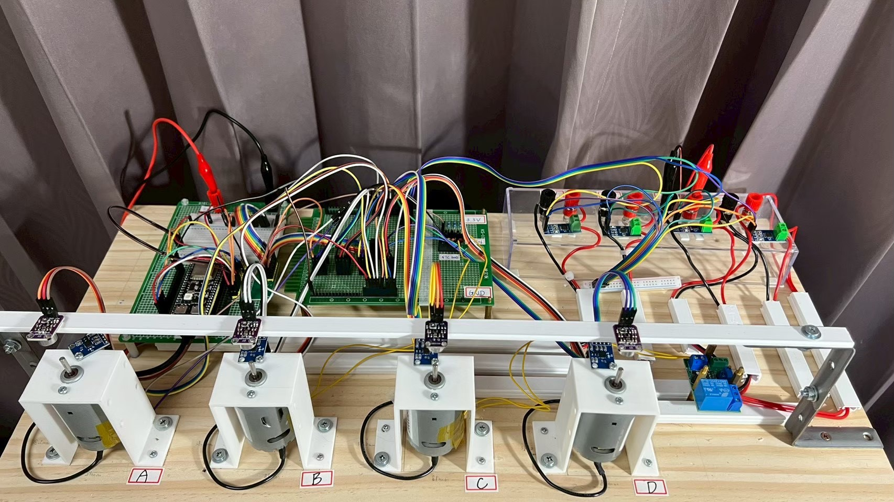
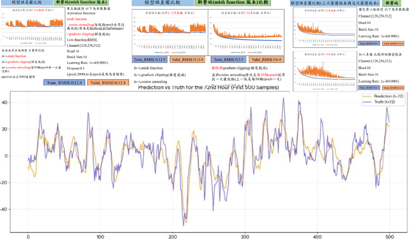
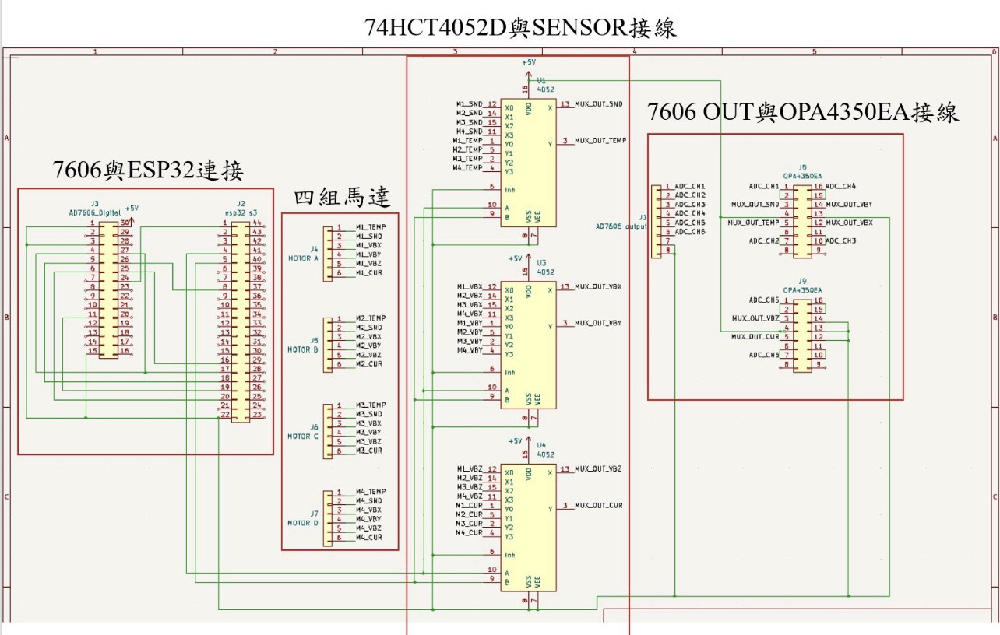

工業 4.0 多模態馬達預測性維護系統
結合邊緣運算與硬體整合的實作專案。底層硬體使用 ESP32 與 Raspberry Pi 5 搭載 Hailo-8 AI 加速晶片，整合震動與聲學感測器，並導入 LLM 生成維修指引， 打造完整的工業監控與預測架構。

結合邊緣運算與硬體整合的實作專案。底層硬體使用 ESP32 與 Raspberry Pi 5 搭載 Hailo-8 AI 加速晶片，整合震動與聲學感測器，並導入 LLM 生成維修指引， 打造完整的工業監控與預測架構。

針對 CMAQ 數據進行時間序列分析。在模型架構上，將學習目標從傳統的 「學習偏差值（bias）」改為直接「學習觀測值（obs）」，成功解決活化函數 與負值邊界的問題，進一步優化模型的預測準確度。

具備 PCB 電路板佈局設計與實體電子元件焊接能力。能將邊緣運算架構 從軟體環境實際落地，完成具備感測、運算與控制功能的實體硬體裝置。